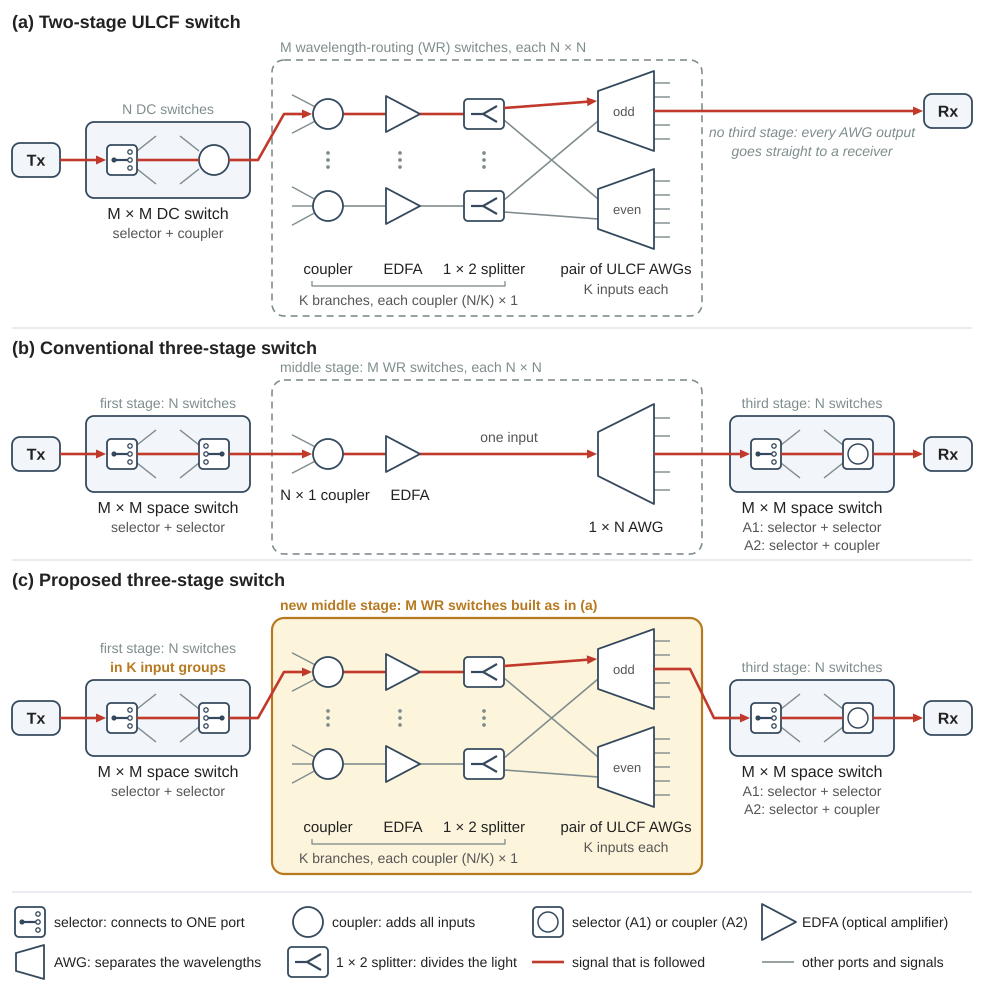

Orientation
02Research overview
This page gives the overview of the research. It states the research question, shows the three switches that the paper compares in one figure, defines the symbols, and lists what will be evaluated and from which file each evaluation starts. The later pages give the details.
1. The question and the three switches
An optical circuit switch connects each of its input ports to one output port. The signal stays light all the way: the switch never converts it to an electrical signal. The size of the switch is its port count: the number of input ports, which is also the number of output ports. A large switch is built from smaller switches, the sub-switches. They are arranged in stages: every signal passes one sub-switch of each stage, one after the other.
A connection works when the receiver can correct its bit errors. Forward error correction (FEC) is a code that removes the bit errors as long as the bit error ratio (BER) before the correction is at most a limit, the FEC limit. In this project the FEC limit is \(10^{-2}\) (BER_limit = 1e-2).
When the middle stage of a three-stage optical circuit switch uses the low-loss wavelength routing of ULCF AWGs, how far can the port count and the throughput grow, how simple can the third stage become, and under which traffic conditions does this gain hold?
This page explains every term of this sentence: the stages and the ULCF AWG in section 2, the port count and the throughput in section 3, the simple third stage in section 4, and the traffic conditions in section 5.
The planned paper answers the question by comparing three switches. Two of them are published work, and this package holds finished code for them. The third one is your work. Table 1 names the three switches. Section 2 explains the terms that the table uses.
| Switch | Name and idea | Source | Status | Page |
|---|---|---|---|---|
| (a) | Two-stage ULCF switch. Space switches, then wavelength-routing (WR) switches in which the one large aggregation coupler is split into \(K\) small couplers. | Nagai et al., J. Opt. Commun. Netw., 2018 | given | 21 |
| (b) | Conventional three-stage switch. Space switches, WR switches, space switches. Every WR switch has one large aggregation coupler. | Mitsuya et al., J. Lightw. Technol., 2025 (its Scheme A) | given | 22 |
| (c) | Proposed three-stage switch. The three stages of (b), with the WR switches of (a) in the middle stage. | The planned paper | yours | 23 |
The pages and the code call the paper of Nagai et al. the JOCN paper (JOCN 2018) and the paper of Mitsuya et al. the JLT paper (JLT 2025). The full references are on page 01.
2. The three architectures in one figure
The three switches are built from the same few elements. Table 2 says in one or two sentences what each element does. The background pages explain them in detail.
| Element | What it does | Page |
|---|---|---|
| Transmitter (Tx) | Sends one signal. Its laser is tunable: it can be set to any of the \(N\) wavelength channels. A wavelength channel is one of the optical frequencies that the switch uses; the two papers place 96 of them at intervals of 50 GHz. | 17 |
| Selector, \(1 \times M\) | A switch that connects its single port to one of \(M\) ports. Its loss is low. A port that is switched off still passes a little light; the extinction ratio (ER) says how much weaker this light is than the signal. | 16 |
| Coupler, \(M \times 1\) | A passive element that adds the light of all its inputs into one output. Its loss is high. It needs no control, and it cannot block anything. | 16 |
| Space switch, \(M \times M\) | A selector at every input and a selector or a coupler at every output. It connects any input to any output, whatever the wavelength. With couplers at the outputs it is called a delivery-and-coupling (DC) switch. | 16 |
| EDFA | An erbium-doped fiber amplifier. It restores the optical power, and it adds noise. | 15 |
| AWG | An arrayed-waveguide grating. It separates wavelengths: light that enters its input port leaves at the output port that belongs to its wavelength channel. | 17 |
| ULCF AWG | An AWG that can be used with several input ports (ULCF = uniform loss and cyclic frequency). The wavelength channel that reaches a given output port depends on the input port through which the signal enters. | 17 |
| \(1 \times 2\) splitter | Divides the light at its input between its two outputs: each output carries all the signals. In Fig. 1 it feeds the two ULCF AWGs of a pair. The JOCN paper has a de-interleaver at this place; page 17 explains the difference. | 17 |
| Wavelength-routing (WR) switch, \(N \times N\) | A coupler that collects the input signals (the aggregation coupler), an EDFA and an AWG. The transmitter chooses the output port by choosing its wavelength. | 17 |
| Receiver (Rx) | A coherent receiver. It detects the one wavelength channel that its own laser, the local oscillator (LO), selects. | 14 |

In Fig. 1, \(N\) is the number of wavelength channels, \(M\) is the size of a space switch, and \(K\) is the number of AWG input ports that are used (section 3). The signal that the red line follows is the target signal; the comments in the code call it the target. Read each panel from left to right and look for four things: the path of the target signal, what sets its wavelength, the loss before the EDFA, and the places where crosstalk enters.
Crosstalk is light of other signals that reaches the receiver together with the target signal. One such unwanted contribution is called a leak. A leak on the wavelength of the target signal is in-band crosstalk: no filter can remove it. A leak on another wavelength is out-of-band crosstalk.
(a) Two-stage ULCF switch
- Path. The transmitter is connected to one input of a DC switch. The selector at this input sends the target signal to one of the \(M\) outputs of the DC switch, and each output is wired to one of the \(M\) WR switches. In the WR switch a coupler adds the target signal to the signals of other DC switches, an EDFA amplifies them together, and a \(1 \times 2\) splitter sends them to both AWGs of a pair of ULCF AWGs. The pair routes every signal to the output port that belongs to its wavelength; one AWG has the odd-numbered output ports of the WR switch, the other AWG has the even-numbered ones. One receiver is connected to each output port.
- Wavelength. The receiver sits at a fixed output port of the AWG. Which wavelength channel reaches this port depends on the input port of the AWG, that is, on the coupler through which the signal enters. The transmitter tunes its laser to this channel (function
awg_channel, page 17). - Loss before the EDFA. The DC switch (one selector and one coupler) and the aggregation coupler. Each of the two ULCF AWGs has \(K\) input ports, so the \(N\) inputs of the WR switch are divided among \(K\) couplers of size \((N/K) \times 1\); one coupler of size \(N \times 1\) is not needed. A smaller coupler has less loss. This is the “low-loss wavelength routing” of the paper title. Its price is \(K\) EDFAs for every WR switch.
- Crosstalk. It enters at two places. In the DC switch the selectors of the other \(M-1\) inputs leak into the coupler at the output of the target signal. In the ULCF AWG a signal of the same wavelength that enters another input port leaks to the output port of the target signal: up to \(K-1\) leaks.
(b) Conventional three-stage switch
- Path. A first-stage space switch (a selector at the input, a selector at the output) sends the target signal to one of the \(M\) WR switches of the middle stage. There one \(N \times 1\) aggregation coupler collects the signals of all \(N\) first-stage switches, one EDFA amplifies them, and an AWG with a single input separates them. Output \(j\) of every WR switch is wired to third-stage space switch \(j\), and this switch connects the target signal to its receiver.
- Wavelength. The AWG has one input, so its output port \(j\) passes only wavelength channel \(j\). Every signal that goes to third-stage switch \(j\) therefore has wavelength \(j\), whichever first-stage switch it comes from and whichever WR switch carries it.
- Loss before the EDFA. The two selectors of the first-stage switch and the \(N \times 1\) aggregation coupler. The coupler is by far the larger part (section 4).
- Crosstalk. In the first-stage switch a leak has to pass two selectors that are switched off: the selector at its own input and the selector at the output of the target signal. The \(M\) inputs of third-stage switch \(j\) come from the \(M\) WR switches, one from output \(j\) of each, so each of them carries wavelength \(j\) only. Every leak there is therefore in band. With selectors at the outputs (Scheme A1) a leak again passes two selectors that are switched off. With couplers at the outputs (Scheme A2) the switch needs fewer elements, but only one selector blocks a leak.
(c) Proposed three-stage switch
- Path. The first and third stages are those of (b). The middle stage is built like the WR switch of (a). The \(N\) first-stage switches are divided into \(K\) input groups. In every WR switch, each group has its own \((N/K) \times 1\) coupler, EDFA and \(1 \times 2\) splitter, and its signals enter one input port of each of the two ULCF AWGs.
- Wavelength. The wavelength channel now depends on two things: the third-stage switch (the output port of the AWG) and the input group of the first-stage switch (the input port of the AWG). All WR switches of the middle stage use the same division into input groups. The aim of this rule is that the wavelength of a connection does not depend on the WR switch that carries it. Finding the wavelength rule and checking this property is your first task (page 23).
- Loss before the EDFA. The two selectors of the first-stage switch and one small coupler, as in (a).
- Crosstalk. The ULCF AWG adds its own leaks, as in (a). The new point is the third stage: signals from different input groups reach the same third-stage switch on different wavelengths. A leak on another wavelength is out of band, and a coherent receiver can reject it when the frequency difference is large enough (page 14). How many leaks stay in band, and what the switch gains from this, is the core of your research.
3. Notation, port count and throughput
Every page uses the symbols of Table 3, and the code uses the variable names in the third column. The size of a space switch is not stored in a variable named M. The two-stage scripts keep the name dcs_input_port_num of the earlier laboratory code. The three-stage scripts write sw_size, because the laboratory code already uses the letter M for the order of the equalizer. In the last column, “two-stage” means step21_two_stage_one_point and main_two_stage_ULCF, and “three-stage” means step22_three_stage_one_point and main_three_stage_conventional.
| Symbol | Meaning | Code variable | Value in the given scripts |
|---|---|---|---|
| \(N\) | Number of wavelength channels = size of a WR switch = number of first-stage (and third-stage) space switches | N | 96 |
| \(M\) | Size of a space switch (\(M \times M\)) = number of WR switches | dcs_input_port_num, sw_size | two-stage: 2, 4, 8, 16, 32 three-stage: 16, 32, 64, 128 |
| \(K\) | Number of input ports of the ULCF AWG that are used = number of aggregation couplers and EDFAs per WR switch (the JOCN paper writes \(n\)) | ULCF_deg | 1, 2, 4, 8, 12 |
| \(MN\) | Port count of the whole switch | – | two-stage: 192 … 3072 three-stage: 1536 … 12288 |
| \(P_{\mathrm{Tx}}\) | Transmitter power, both polarizations together [dBm] | PTx, list pin_ary | two-stage: -20 … 10 dBm three-stage: -10 … 10 dBm |
| \(B\) | Symbol rate (baud rate) [Hz]; 1 GBd (gigabaud) is \(10^{9}\) symbols per second | baudrate | two-stage: 24 GBd three-stage: 32 GBd |
| \(F_s\) | Sampling rate of the simulation = up × baudrate [Hz]; up is the oversampling rate (samples per symbol), and the two-stage and the three-stage scripts set up = 2 | Fs | two-stage: 48 GHz three-stage: 64 GHz |
| \(k\) | Bits per symbol (2 QPSK, 4 16QAM, 5 32QAM, 6 64QAM) | mod_flag | two-stage: 5 three-stage: 4 |
| \(G,\ F\) | Gain and noise figure of an amplifier (linear); the code holds the noise figure in dB | NF, NF2 | NF: 5 dB (two-stage), 6 dB (three-stage)NF2: 4 dB |
| \(P_{\mathrm{sat}}\) | Saturation (total) output power of an EDFA [dBm] | edfa_sat1, edfa_sat2 | 20 dBm, 10 dBm |
| \(\mathrm{ER}\) | Extinction ratio of a selector [dB] | dcs_ex_ratio, sel_ex_ratio | two-stage: 36 dB three-stage: 35 dB |
| \(\mathrm{XT}_{\mathrm{AWG}}\) | AWG crosstalk level [dB]: one leak from another input port of the ULCF AWG is this far below the signal at the same output port | AWG_XT | two-stage: 32 dB |
| \(h\nu\) | Photon energy at 1550 nm | h*f in amplified_by_EDFA3 | 1.28e-19 J |
Three demos set a larger oversampling rate than the scripts of Table 3. demo13_waveform_fft_filter sets up = 4, so that its plot shows the shape of the waveform between the symbols. demo14_coherent_rx_dsp_ber and demo16_space_switch_crosstalk set up = 5, because their simulated band, which is \(F_s\) wide, must also hold a signal on the next wavelength channel, 50 GHz away. The two-stage and the three-stage scripts need no such room: every signal there is on the wavelength of the target signal (step21_two_stage_one_point explains this in its note on up).
For this page you need only \(N\), \(M\) and \(K\). The background pages define the other symbols; come back to this table when you meet them.
Port count and throughput
The port count is \(MN\): there are \(N\) first-stage switches with \(M\) input ports each. The throughput is the port count times the bit rate of one port. For example, with \(N = 96\) and \(M = 128\) the switch has 96 × 128 = 12288 ports. At 200 Gbit/s per port its throughput is 12288 × 200 Gbit/s = 2457.6 Tbit/s.
The value 200 Gbit/s is the bit rate of one port in the JLT paper. Its signal is polarization-multiplexed 16QAM at 32 GBd: the two polarizations of the light carry two independent signals (page 14), and each symbol carries \(k = 4\) bits. Such a signal carries 2 × 4 × 32 GBd = 256 Gbit/s. The paper counts 200 Gbit/s of this as the net capacity of a port. The other 56 Gbit/s is overhead that carries no user data, for example the check bits of the FEC; the paper does not list it.
| \(M\) | Port count \(MN\) | Throughput [Tbit/s] |
|---|---|---|
| 16 | 1536 | 307.2 |
| 32 | 3072 | 614.4 |
| 64 | 6144 | 1228.8 |
| 128 | 12288 | 2457.6 |
These four sizes are the target port counts of the JLT paper, and main_three_stage_conventional searches them (list_sw_size = [16 32 64 128]). The two-stage scripts use another signal: 32QAM, that is \(k = 5\), at 24 GBd. Which bit rate per port the comparison uses is a part of the common parameter set that you choose (section 5).
4. What limits each switch
Two effects limit the size of a switch, and a third quantity is its price.
- Loss before the EDFA. An EDFA adds noise, and the signal-to-noise ratio (SNR) after it is set by the signal power at its input (page 15). As long as this noise limits the connection, every decibel that is lost before the EDFA must be paid with one decibel of transmitter power.
- In-band crosstalk. It disturbs the signal like noise, but it grows together with the signal. More transmitter power does not help: crosstalk puts a ceiling on the SNR.
- Hardware count. A \(1 \times M\) selector is a tree of \(M-1\) switch elements; the JLT paper calls them \(1 \times 2\) selectors. The JLT paper counts these \(1 \times 2\) switch elements and the EDFAs that a switch needs, and the JOCN paper counts the DC switches, the EDFAs, the \(1 \times 2\) splitters (de-interleavers in that paper) and the AWGs. Both divide the numbers by the port count.
Table 5 gives the numbers for \(M = 64\) and \(N = 96\), that is, for 6144 ports. A loss is given in decibels (dB), and a power in dBm, that is, in decibels relative to 1 mW. The losses of the elements that a signal passes one after the other add up. The loss of one element follows the rules of page 12: a selector costs 0.5 dB and a coupler 3.5 dB for every factor of two in its number of ports, rounded up (functions selector_loss, coupler_loss and DCS_loss). A size of 64 is 6 factors of two, a size of 96 counts as 7, and a size of 8 is 3. With these functions the loss before the EDFA is one line of MATLAB for each switch:
DCS_loss(64) + coupler_loss(96) % (a), K = 1 : 24 + 24.5 = 48.5 dB
DCS_loss(64) + coupler_loss(96/12) % (a), K = 12: 24 + 10.5 = 34.5 dB
2*selector_loss(64) + coupler_loss(96) % (b) : 6 + 24.5 = 30.5 dB| Switch | Loss before the EDFA | Third-stage crosstalk | Hardware count per port |
|---|---|---|---|
| (a) | DC switch and aggregation coupler. \(K = 1\): 48.5 dB \(K = 12\): 34.5 dB | None: there is no third stage. Leaks arise in the DC switch and in the ULCF AWG (section 2). | \(1 \times 2\) switch elements: \(M-1 = 63\) EDFAs: \(K/N\), that is 1/96 for \(K = 1\) and 12/96 for \(K = 12\) |
| (b) A1 | Two selectors and aggregation coupler. 30.5 dB | 63 leaks, all in band. Each one is \(2\,\mathrm{ER}\) = 70 dB below the target signal. Signal-to-crosstalk ratio: 52.0 dB | \(1 \times 2\) switch elements: \(4(M-1) = 252\) EDFAs: \(1/N\) = 1/96 |
| (b) A2 | As Scheme A1. 30.5 dB | 63 leaks, all in band. Each one is \(\mathrm{ER}\) = 35 dB below the target signal. Signal-to-crosstalk ratio: 17.0 dB | \(1 \times 2\) switch elements: \(3(M-1) = 189\) EDFAs: \(1/N\) = 1/96 |
| (c) | The first stage is unchanged. The one 96 × 1 coupler becomes \(K\) couplers of size \((96/K) \times 1\), so the loss is smaller. To be evaluated by you. | The third-stage switch is unchanged, so one leak is as strong as in Scheme A1 or A2. The leaks no longer all have the wavelength of the target signal: this depends on the input groups they come from. To be evaluated by you. | The space switches are unchanged. Every WR switch has \(K\) EDFAs, \(K\) \(1 \times 2\) splitters and a pair of ULCF AWGs where (b) has one EDFA and one AWG. To be evaluated by you. |
The signal-to-crosstalk ratio is the power of the target signal divided by the power of all leaks together. For \(M-1\) leaks of equal power, each \(\mathrm{ER}\) below the target signal, it is
for Scheme A2. For Scheme A1 the same formula with \(2\,\mathrm{ER}\) gives 52.0 dB. Page 16 derives it.
Three things can be read from Table 5.
- At the same port count the three-stage switch loses 18 dB less before the EDFA than the two-stage switch with \(K = 1\). The reason is the output side of the first switch: a selector (3 dB) in the three-stage switch, a coupler (21 dB) in the DC switch. The JLT paper reports the consequence: with its 200-Gbit/s signal and a transmitter power of at most 5 dBm, its two-stage switch with one large coupler cannot have more than 1000 ports.
- In the conventional three-stage switch the aggregation coupler causes most of the loss before the EDFA: 24.5 dB of 30.5 dB.
- Scheme A2 saves a quarter of the selectors, but its third-stage crosstalk is close to what the receiver tolerates. The crosstalk alone limits the SNR to 17.0 dB, and the receiver of the simulation needs an SNR of 14.0 dB at the FEC limit for 16QAM (header of
main_three_stage_conventional.m). The coupler of Scheme A2 also raises the loss of the third-stage switch from 6 dB to 24 dB. This loss is after the EDFA, where it lowers the SNR far less than the same loss before the EDFA (page 15).
The proposed switch addresses both limits of the conventional three-stage switch at the same time. Smaller couplers reduce the loss before the EDFA. Different wavelengths at a third-stage switch can reduce the in-band crosstalk, which is the limit of the simple third stage of Scheme A2. The price is a larger number of EDFAs.
Row (a) of Table 5 is a calculation for the port count of the other rows: main_two_stage_ULCF searches DC switches only up to \(M = 32\). The given two-stage scripts also add 3 dB before the DC switch for the fan-in and fan-out devices of a multicore fiber (fiber_flag = 1). This is a setting of the earlier study (page 21 explains the multicore fiber), and Table 5 leaves it out. Section 5 comes back to such differences.
5. What will be evaluated
The paper evaluates four quantities for the three switches (paragraph 7 of the introduction).
- Transmission performance: the BER and the SNR of one connection at one operating point, that is, for one transmitter power and one switch size.
- Feasible port count: the largest port count \(MN\) whose BER stays at or below the FEC limit, as a function of the transmitter power.
- Throughput: the port count times the bit rate of one port.
- Hardware count: the numbers of selectors, couplers, EDFAs, AWGs and \(1 \times 2\) splitters per port.
Two traffic conditions
The crosstalk of the proposed switch depends on where the signals that pass one third-stage switch come from. The paper therefore evaluates the proposed switch under two traffic conditions.
- Dispersed: the signals come from many input groups, so their wavelengths differ.
- Concentrated: the signals come from one input group, so they have the same wavelength again.
These two descriptions are rough on purpose: making them exact is a part of work1_wavelength_rule. The work files list conditions that your result must meet. One of them is that concentrated traffic removes the crosstalk advantage of the proposed switch. The two given switches need no traffic condition: their scripts put every leak on the wavelength of the target signal, which is the worst case. For the third stage of the conventional switch this is always the case.
The file from which each evaluation starts
Table 6 lists the starting files. All files are in the folder matlab: the given ones in main, yours in work.
| Evaluation | Starting file | Traffic conditions for (c) |
|---|---|---|
| Transmission performance | (a) step21_two_stage_one_point given(b) step22_three_stage_one_point given(c) work2_three_stage_proposed yours | Dispersed and concentrated |
| Feasible port count | (a) main_two_stage_ULCF given(b) main_three_stage_conventional given(c) work2_three_stage_proposed yours | Dispersed and concentrated |
| Throughput | (a), (b), (c) work3_comparison yours | As the port count |
| Hardware count | (a), (b), (c) work3_comparison yours | No influence |
The proposed switch needs one step before these four: the wavelength of every connection and the number of in-band leaks in a third-stage switch. This is work1_wavelength_rule. It uses whole numbers only, and its result is an input of work2_three_stage_proposed.
Three points that keep the comparison fair
- Two kinds of crosstalk. The leaks of the third-stage switch and the crosstalk of the ULCF AWG itself have different causes and different levels. Keep them apart in the simulation and in the results.
- Gain against cost. The smaller couplers give a gain in transmitter power. The larger number of EDFAs is a cost. The paper shows both.
- One common parameter set. The two given switches use the settings of two different earlier studies: compare section 1 of
step21_two_stage_one_pointwith section 1 ofstep22_three_stage_one_point. A comparison of the three switches needs one parameter set. You choose it and give the reasons (page 23).
6. The experiment in outline
The simulation is not the last step. Later in the project a part of the switch is built on the optical bench. A signal is sent through it, the received waveform is captured, and the BER is computed afterwards on a computer (offline), with the same kind of processing as in the simulation. Both earlier papers also verified their simulations with an experiment on a part of the switch: one path built with real devices, plus further signals that act as crosstalk.
The simulation tells which configurations are worth building: which \(M\), which \(K\), which type of third stage, and at which transmitter power. This package holds no code for the experiment. What is built and what is measured is planned with your supervisor (page 03).
7. Where to go next
You can do the following without looking at this page.
- Sketch the three switches of Fig. 1 and follow one signal from Tx to Rx in each of them.
- Say what sets the wavelength of a connection in (a), in (b) and in (c).
- Compute the port count and the throughput from \(M\) and \(N\), and the loss before the EDFA of (a) and (b) from \(M\), \(N\) and \(K\).
- Explain in two sentences why the third-stage leaks of (b) are in band, and what (c) changes.
- Name the four evaluations, the two traffic conditions, and the file from which each evaluation starts.